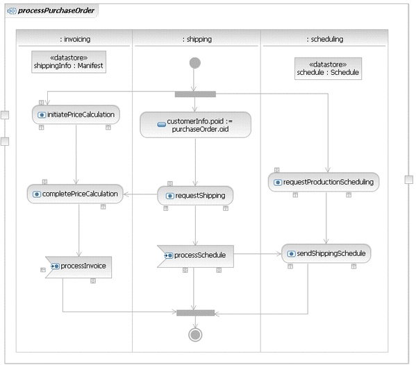

| Example: Participant (SoaML) |
 |
|
| Related Elements |
|---|
We provide three sample uses of Participants. Figure 1 shows an OrderProcessor Participant which provides the purchasing Service. This service provides the Purchasing Interface which has a single capability modeled as the processPurchaseOrder Operation. The OrderProcessor Participant also has Requests for invoicing, scheduling and shipping. Participant OrderProcessor provides a method activity, processPurchaseOrder, for its processPurchaseOrder service operation. This activity defines the implementation of the capability. It is important to note that, because invoicing, scheduling, and shipping are RequestPoints, they represent usages of the ServiceInterfaces with which they are typed. The underlying service component implementation of OrderProcessor would provide InvoiceProcessing, and require Invoicing; it would require Scheduling; and it would provide ScheduleProcessing and require Shipping. Figure 1. Static representation of an OrderProcessor Participant
Figure 2 shows the details of this particular owned behavior.
Figure 2. Activity diagram for the OrderProcessor's processPurchaseOrder operation  Figure 3 illustrates a Shipper specification Participant that is realized by the ShipperImpl Participant. Either can be used to type a part that could be connected to the shipping Request of the OrderProcessor Participant, but using Shipper would result in less coupling with the particular ShipperImpl implementation. Figure 3. Example of a <<specification>> Participant and a realization of that Participant
Finally, Figure 4 shows a Manufacturer Participant that is an assembly of references to other participants connected together through ServiceChannels in order to realize a Purchase Order business process. The Manufacturer participant uses delegation to delegate the implementation of its purchaser service to the purchasing service of an OrderProcessor participant.
Figure 4. Manufacturer Participant realizing a Purchase Order business process using
sub-service assembly
|


| Concepts |
|---|
Licensed Materials - Property of IBM |